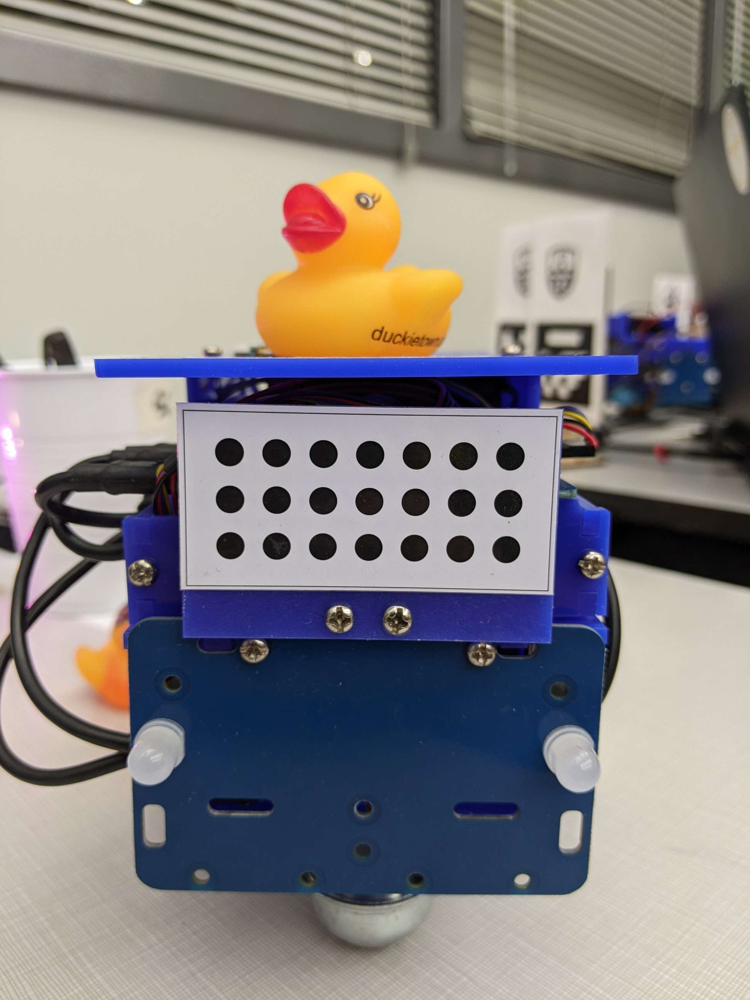

In this "catch up" lab we aimed to string some concepts together including lane following, autonomous safe taliling behavior and PID. In Matt Taylor's words: "This should be a fairly easy lab; should only take about three hours." Spoiler alert, it did not. :D
What strategies were implemented for maintaining a safe driving distance and avoiding collisions?
Our strategy to keep a safe distance was fairly simple. Given to us was node that detected the distance based on image seen in fig. 1. Using this node, we were able to detect when our Duckiebot got arbitrarily too close to the leader bot and if so, stopped our bot immediately. Currently only emergency stop was used, no collision avoidance was implemented.

How well did your implemented strategy work?
Our implemented strategy didn't work too great. We used our original lane following node to follow within the lines and then the distance detection node to make sure we don't rear-end the leader bot. When the leader bot would turn, we wanted to detect gradual vs sharp turns.
This worked fairly well.
If the turn was gradual, we assumed it was still following the lane, and we also continued to lane follow. If the turn was sharp we knew it was likely at an intersection. Therefore, we would need to stop and signal. Once that was complete, we turned off our lane following, manually spun the bot 90° to match the leader bot, and turned lane following back on.
This didn't really work.
We got a lot of the items working seperately but couldn't really connect all of them together. We were able to do the following tasks individually:
Our goal is to update this in the future! We want to substantially upgrade our PID, come up with a better way to track the follower, and implement our turning feature all in one.
Was it reliable?
It wasn't very reliable. Our biggest issue came from detecting the image seen in fig.1 due to network issues. When we were building the project on the duckiebot with few people on the 5GHZ network, everything worked a lot smoother. When detecting the back pattern, we ran into a lot of problems with our PID working as accurately as we hoped.
Also, due to these issues, we sometimes ran into problems with picking up the leader bot back plate detection, however this usually happened less than our PID going awry.
In what situations did it perform poorly?
To be honest, our implementation worked fairly well when looked at each part individually. When we started stringing things together, thats when we had problems. The poorest situation was on the turns, we tried to view the turn with object detection and then turn off lane following and PID, spin with dead reckoning, and turn PID lane following back on. It was the poorest situation by far.
The PID for following the leader bot also didn't work fantastic. The follower bot was okay at following the leader when it turned slightly. We didn't implement variable speed but we plan to use implement by relating the distance to the back plate to the speed required.